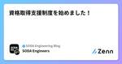
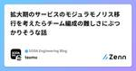
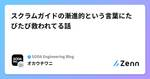
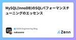

SODA Engineering Blogのフィード
https://zenn.dev/p/team_soda
株式会社SODAの開発組織がお届けするZenn Publicationです。 是非Entrance Bookもご覧ください！ → https://recruit.soda-inc.jp/engineer
フィード

SODAのエンジニアの支援制度まとめ
SODA Engineering Blogのフィード
株式会社SODAです！株式会社SODAは SNKRDUNK（スニーカーダンク） というCtoCフリマサービスを開発・運営している会社です。[1]この記事では、エンジニアが常にスキルアップ、生産性向上をサポートする、SODAのエンジニアの支援制度をご紹介します。 Learning制度SODAでは、エンジニア一人ひとりが最大限のポテンシャルを発揮できるよう、月1万円までの技術書の購入費用をサポートしています。電子書籍（KindleやPDF）も対象で、退職時の返却は不要です。この制度は、社内で広く利用されています！https://zenn.dev/team_soda/arti...
6時間前

探索的テストの勉強会でアキネイターゲームをやった話 2
2
SODA Engineering Blogのフィード
こんにちは。SODAでQAエンジニアをやっているokauchiです。SODAでは週に1回、エンジニアが集まって、自主的に勉強会をやっています。先日、自分が発表を担当する会があったので、探索的テストについて簡単なハンズオンをやりました。 そもそも探索的テストとは体系的な話を少ししたのですが、そこまで真新しい話もないので割愛します。頭の中で考えたテスト設計をすぐにテスト実行、その結果を元に新たなテスト設計を考え、またテスト実行する。このループを繰り返すという話を中心に、経験者じゃないと効果を出しにくかったり、他の似た名前のテストタイプとの住み分けの話をしました。 実際に探索的テス...
1日前

SODAの外部勉強会やカンファレンスへの参加支援についてご紹介 1
SODA Engineering Blogのフィード
株式会社SODAです！株式会社SODAは SNKRDUNK（スニーカーダンク） というCtoCフリマサービスを開発・運営している会社です。[1]今回は、SODAのエンジニア組織における、カンファレンスや外部勉強会への参加ルールについてご紹介します！ SODAにおける外部勉強会・カンファレンスへの参加についてSODAでは、外部勉強会やカンファレンスへ参加したメンバーの市場価値向上に繋がることや、SODAの採用広報にも繋がることから勉強会・カンファレンスへの登壇を積極的に行ってほしいと考えています、また、拡大する組織の中で事業成長を生み出すにはまだまだ知識・経験が組織に足りて...
3日前

資格取得支援制度を始めました！ 2
SODA Engineering Blogのフィード
株式会社SODAです！株式会社SODAは SNKRDUNK（スニーカーダンク） というCtoCフリマサービスを開発・運営している会社です。[1]会社やエンジニア組織に関する情報は以下リンクなどをご覧ください。https://recruit.soda-inc.jp/https://recruit.soda-inc.jp/engineer今回は、SODAの福利厚生である資格取得支援制度についてご紹介します！ 資格取得支援制度ってなに？自ら学びの機会を取りに行く人を支援することを目的に、資格を取得したい従業員をサポートするため、資格取得時に奨励金として会社から受験料をお支払...
8日前

拡大期のサービスのモジュラモノリス移行を考えたらチーム編成の難しさにぶつかりそうな話 4
SODA Engineering Blogのフィード
背景著者が開発に携わるサービスは拡大期にあり、リアーキしてモノリスからモジュラーモノリス化しようと計画している。著者はモジュラーモノリス化することで著書・チームトポロジーで描かれるようなストリームアラインドチームができていく、という理想を抱いていたのだが、どうもそれにはハードルがあるように感じたので、課題感を言語化し、それにどう対処していくかを考えた。 チームトポロジー的理想と、それに対する課題▼理想逆コンウェイ戦略によりモジュール分割され、そこに必要な職能のメンバーが集まってストリームアラインドチームができる。エンジニアの認知負荷は減少し、コミュニケーションや意思決定は...
9日前

スクラムガイドの漸進的という言葉にたびたび救われてる話 2
SODA Engineering Blogのフィード
こんにちは。SODAでQAエンジニアをやっているokauchiです。ここ数週間は毎週記事公開が出来ていまして、SODA Engineering Blogを独占しちゃいそうです。それでも良いからドンドン書いて！とGOサインもらった（最高）ので、引き続き記事書きます！今回は、スクラムガイドの漸進的という言葉が助かっているという話です。 定期的に読むスクラムガイドSODAでは、定期的にスクラムガイドを読む習慣があります。月に1回読み返しましょうとか、週1回の勉強会で定期的に予定されている訳ではないのですが、チームの誰かが気づくんですね。そろそろ読み返した方が良いんじゃないかと。それ...
9日前

MySQL(InnoDB)のSQLパフォーマンスチューニングのエッセンス 187
SODA Engineering Blogのフィード
はじめにMySQL(InnoDB)でSQLのパフォーマンスチューニングをするときに役に立つ知識をエッセンスとしてまとめました。結合(JOIN)やB-treeインデックスの探索の仕組み、実行計画の基本的な見方を紹介します。想定する読者は、SQLのパフォーマンスを改善する必要があるが実行計画をみてもいまいちピンと来ない方です。インデックスの作成の経験や、複合インデックスやカーディナリティの知識があることを前提にしています。目標は、実行計画の内容がよく分からない読者が、実行計画をみただけでクエリが実行される様子をイメージでき、自信を持ってクエリの改善にあたることができるようにすることで...
10日前

[E2Eテスト自動化]実行できるテスト、再実行できるテスト
SODA Engineering Blogのフィード
こんにちは。SODAでQAエンジニアをやっているokauchiです。今回は、E2Eテスト自動化で意識したいテストの再実行についてです。 ECサイトの新規会員登録の自動化に挑戦ECサイトの新規会員登録を例に考えてみましょう。流れは以下の通りです。①会員登録画面を開く②メールアドレス、パスワードを入力する③会員登録ボタンを選択④招待メールを開き、本会員登録リンクを選択⑤会員登録完了画面が表示されていることを確認する新しく会員データの登録と、メールの検索という操作が出てきます。人の手でやる分にはとても簡単なのですが、テスト自動化におきかえると難しさが出てきますね。ポイント...
14日前
[E2Eテスト自動化]運用の谷はスモールスタートでギャップを小さく
SODA Engineering Blogのフィード
こんにちは。SODAでQAエンジニアをやっているokauchiです。今回は、E2Eテスト自動化で自分も経験がある運用の谷についてです。 E2Eテスト自動化、テストシナリオ作成始めはとってもワクワク！E2Eテストツールが導入でき、ついにテストシナリオを作り始めるようになると、毎日が刺激的になります！理由は色々あって、・新しいツールを触ることで、今までは難しかった、実現出来なかったテスト自動化が行えるようになる・すぐに自分達の役に立つモノが作れる・試行錯誤をしてシナリオを作り、経験によって出来ることが増えていく、日々の成長が感じやすい・自動化されることで今までやっていた単純...
21日前
【書籍購入補助】Learning制度って利用されてるの？2023年版
SODA Engineering Blogのフィード
この記事は？SODAでは書籍購入補助という福利厚生があります！昨年、利用実績をまとめた記事を公開させて頂いたのですが、1年経過して、どうなったのかを紹介する記事です！[1] Learning制度を改めてご紹介！Learning制度とは、SODA社員の成長の為、書籍購入費用を会社が負担してくれるという福利厚生です。1人あたり月に1万円までの購入費用を経費精算することが出来、kindleやpdfなどの電子書籍にも対応！そのうえ、退職時に会社へ返却は不要なんです（すごい！） ちゃんと利用はされてるの？2022年と比較！福利厚生としてサポートがあるものの、実態としては使...
1ヶ月前
[ECサイトのテスト自動化落とし穴]ページローディングの落とし穴
SODA Engineering Blogのフィード
こんにちは。SODAでQAエンジニアをやっているokauchiです。今回もECサイトのテスト自動化でのハマりポイント、落とし穴を紹介します！ 経験が浅いと落とし穴に落ちがち、で絶望しがち今日も今日とて、既存のdatadogブラウザテストのメンテ。QAエンジニアは直接的にプロダクトコードを触ることも少ない中、誰かの役に立つモノを作っているって業務の中でもなかなか楽しい時間です。業務の中の数割だから良い頭の気分転換になっているのかも。ただまだ現プロダクトでの自動化経験が浅いので、また落とし穴に落ちます。 要素を取得出来ない、だって見つかっていないからね！Part2今回のエラーの...
1ヶ月前
Flutter Gakkaiのスポンサーをしました
SODA Engineering Blogのフィード
1月26日に渋谷でオフライン・オンライン同時開催されたFlutter Gakkaiのスポンサーをしました。弊社からはFlutterエンジニアのえいどりあんが登壇をしてくれました！タイトルは「SNKRDUNKにおけるWebViewからFlutterへのリプレイス」でした。SNKRDUNKは初期の開発ではスピードを優先してWebViewをほぼ全てのページで使用した開発でしたが、今ではユーザ体験向上のためにFlutterへのリプレイスを行っています。この登壇では、どのようにリプレイスを進めていったかリプレイスをした結果と事業への効果検証リプレイスにおいて大事なことなどにつ...
1ヶ月前
[ECサイトのテスト自動化落とし穴]最近見た商品の落とし穴
SODA Engineering Blogのフィード
こんにちは。SODAでQAエンジニアをやっているokauchiです。今回は、ECサイトのテスト自動化でのハマりポイント、落とし穴を紹介します！ 奇跡的に成功しているステップを発見デプロイプロセスで動作している既存のdatadogブラウザテストのメンテ。失敗していたステップの修正をしていた中で、ステップとしてたまたま成功はしているが、経年劣化してしまっているテストステップを見つけました。経年劣化の原因は、要素の指定時にCSSやxPathなど指定していなかったことでAssertionでチェックすべき要素がズレてしまったことです。ついでにこっちも直してしまおう。。と手を動かしていきま...
1ヶ月前
Profile-guided Optimization (PGO) を本番環境に導入するぞ！！！ (前編)
SODA Engineering Blogのフィード
はじめに皆さんGo1.21は使っていますでしょうか？Go1.21ではスライスの操作を簡単にするslicesパッケージ等、ジェネリクスを使ったパッケージがいくつか標準パッケージとしてリリースされました。他にもProfile-guided Optimization (PGO)がGAになりました。今回のブログでは、Go1.21でGAとしてリリースされたPGOについて紹介したいと思います！実際にPGOを本番環境に導入してみたいと考えており、本番環境に実際に導入する前にローカルの環境でPGOを導入して効果があるのかどうかを調査してみました！それらの調査結果を前編としてまとめてました！...
3ヶ月前
MySQL(InnoDB)における各種ロックの挙動を調べてみた
SODA Engineering Blogのフィード
!＼スニダンを開発しているSODA inc.の Advent Calendar 2023 25日目の記事です!!!／ はじめにみなさんこんにちはメリークリスマス🎄ついにアドベントカレンダー最終日！！！現在SODAでwebエンジニアをしているtoshikiです。(3記事目で謎の自己紹介)CTOからflexispotのデスクを譲り受ける代わりにテックブログ3記事執筆するという約束を果たすべく、SODAのAdvent Calendar 2023で3枠担当することになり、この記事をもって無事プレゼントの配達が完了しました🎅(sorenani)今日はクリスマス当日ということで、自...
3ヶ月前
Go静的解析のSuggestedFixを完全に理解して静的解析ツールを書きたくなる
SODA Engineering Blogのフィード
＼スニダンを開発しているSODA inc.の Advent Calendar 24日目の記事です!!!／昨日は imajo さんによる「開発途中の機能を公開してしまって落ち込んだ話」でした！今日はGoの静的解析について書きます！https://qiita.com/advent-calendar/2023/soda-inc ゴール：静的解析ツールを書きたくなる「Goの静的解析なんか難しそう」がこの記事を読んだあとに「思ったより簡単だな。なんか書いてみよう」に変わると嬉しいです。 Goは標準パッケージで静的解析が出来て便利Goでは、 go/ast や go/types ...
3ヶ月前
開発途中の機能を公開してしまって落ち込んだ話
SODA Engineering Blogのフィード
＼スニダンを開発しているSODA inc.の Advent Calendar 23日目の記事です!!!／こんにちは！SODAでFlutterエンジニアをしている今城です。今回は開発途中の機能を公開してしまって落ち込んだ話を書きます。 背景半年前、今の会社に入社し、検索機能の開発に長く取り組んできました。検索機能は最新のアプリで誰でも使えるので、ぜひからインストールして使ってみてください。https://play.google.com/store/apps/details?id=com.snkrdunk.android&pcampaignid=web_shar...
3ヶ月前
datadogブラウザテストを触ってみた
SODA Engineering Blogのフィード
＼スニダンを開発しているSODA inc.の Advent Calendar 22日目の記事です!!!／こんにちは。SODAでQAエンジニアをやっているokauchiです。今回は、datadogブラウザテストを触り始めての所感をお伝えします。 触りはじめたきっかけdatadogブラウザテストhttps://docs.datadoghq.com/ja/synthetics/browser_tests/?tab=リクエストオプションSODAではまだE2Eテスト自動化（以降、テスト自動化と記載します）の導入が十分とは言えない状況です。検討を始めているところなのですが、すでにSRE...
3ヶ月前
後方互換性のあるGoだからこそ実装依存なコードに気をつけたい話
SODA Engineering Blogのフィード
＼スニダンを開発しているSODA inc.の Advent Calendar 2023 21日目の記事です!!!／そして今日はIPAデータベーススペシャリスト試験の合格発表日でもあります！ 無事合格してました！（これを書いているときはまだ発表前なので未来の記憶です） はじめにGoの大きな特徴として後方互換性が保たれているので、言語のバージョンアップのハードルが低いというメリットがありますよね。ですが、そんなGoでも完全な互換性を保証しているわけではありません。特定のケースにおいてバージョンアップによってプログラムを壊す可能性があるのです。実際に遭遇することは少ないかもしれ...
3ヶ月前
MySQLのトランザクション分離レベルとアノマリーについて調べてみた
SODA Engineering Blogのフィード
＼スニダンを開発しているSODA inc.のAdvent Calendar 2023 20日目の記事です!!!／ はじめにリレーショナルデータベースにおけるトランザクションを利用したシステム開発において、意図しないアノマリーが発生しないようにすることはとても重要です。アノマリー(anomaly)とは？anomalyの単純な和訳としては「例外」や「異常」という意味。リレーショナルデータベースの文脈では、直列実行(serializable)ではない実行時に発生する異常状態パターンのことを指す。また、アノマリーはトランザクション分離レベルと関係があり、どのトランザクション...
3ヶ月前